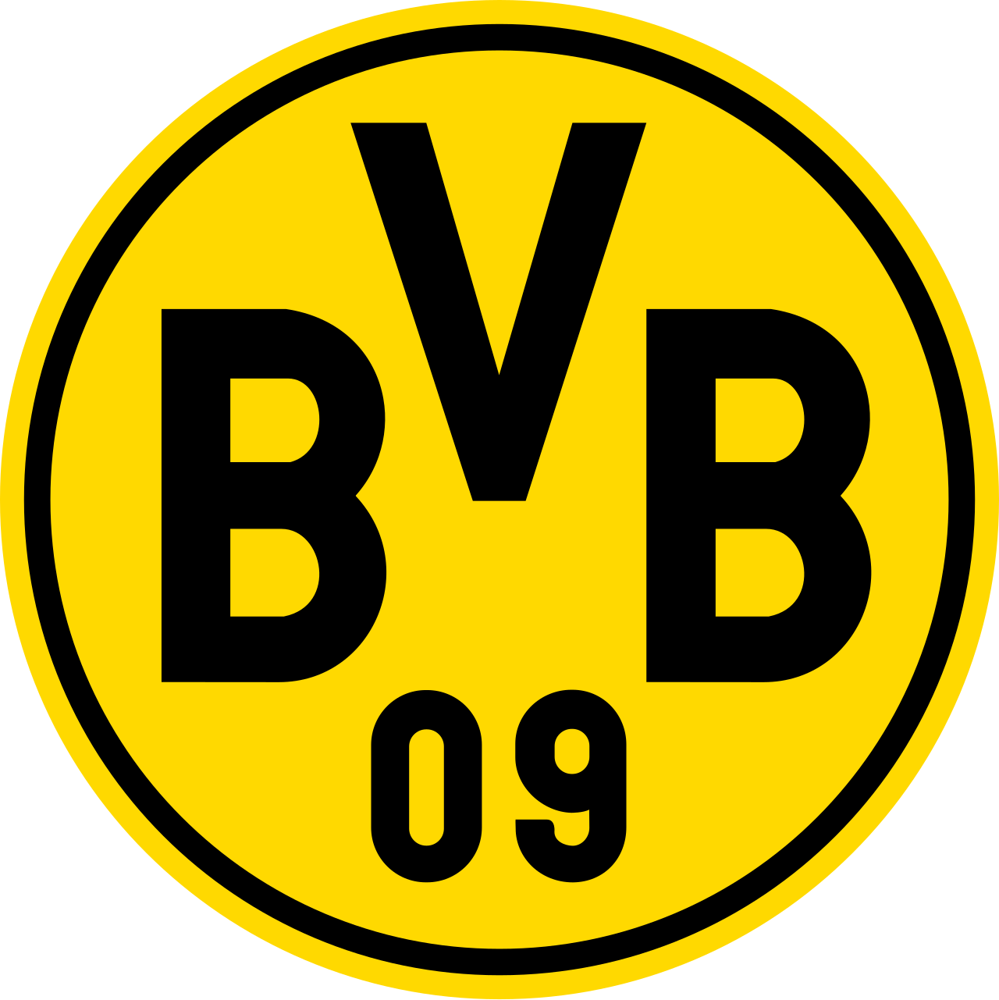

홈 > 브랜드 매거진 > Dallas Trinity FC
댈러스 트리니티 FC Dallas Trinity FC
댈러스 트리니티 FC는 텍사스주 댈러스를 연고로 2024년 출범한 댈러스 최초의 여자 프로축구단으로, 미국 USL 슈퍼리그에 참가한다. 도시를 가로지르는 트리니티강에서 이름을 따왔으며 2024년 5월 구단명과 엠블럼을 공개하고 같은 해 8월 리그 개막과 함께 첫 시즌을 시작했다. 역사적 경기장인 코튼볼을 첫 홈으로 삼았다.
산업 분야 스포츠·아웃도어 · 공개 등급 편집 검수 · 브랜드 평가 4 ★
Da
Dallas Trinity FC
한눈에 보는 브랜드
댈러스 트리니티 FC는 텍사스주 댈러스를 연고로 2024년 출범한 댈러스 최초의 여자 프로축구단으로, 미국 USL 슈퍼리그에 참가한다. 도시를 가로지르는 트리니티강에서 이름을 따왔으며 2024년 5월 구단명과 엠블럼을 공개하고 같은 해 8월 리그 개막과 함께 첫 시즌을 시작했다.
역사적 경기장인 코튼볼을 첫 홈으로 삼았다.
브랜드 관점
구단은 댈러스의 지역 정체성을 브랜딩의 핵심 축으로 삼았다. 도시를 관통하며 1841년 도시 형성 이래 사람들을 잇는 트리니티강을 이름의 토대로 삼아 지역적 자긍심과 회복력을 표현했다.
엠블럼의 페가수스는 1930년대부터 마그놀리아 빌딩 옥상에서 도심을 비춰온 붉은 네온 페가수스를 계승해 도시의 진보와 끈기를 상징하며, 트리니티강의 네 지류를 페가수스의 목과 몸통, 날개에 녹여 강과 도시의 상징을 하나로 결합했다.
시작과 성장
댈러스 트리니티 FC는 미국 USL 슈퍼리그(여자 1부 프로축구) 출범과 함께 창단된 댈러스 최초의 여자 프로축구단으로, 2024년 5월 이름과 엠블럼을 공개하고 같은 해 8월 리그 개막에 맞춰 첫 시즌에 돌입했다. 브랜드 아이덴티티는 샌프란시스코의 디자인 스튜디오 모니커(Moniker)가 댈러스 현지 스튜디오 모디스트웍스(ModestWorks)와 협업해 2024년 완성했다.
두 스튜디오는 도시 댈러스의 본질, 즉 근성과 추진력, 잠재력을 출발점으로 삼아 한계에 머무르지 않고 행동으로 결과를 만드는 도시의 기질을 디자인 언어로 옮겼다. 구단 이름 트리니티는 1841년 창설 이래 댈러스를 관통하며 도시를 하나로 잇는 트리니티강에서 따왔고, 초대 홈구장인 역사적 코튼 볼 경기장과 그 주변 페어 파크의 아르데코 건축군이 시각적 영감의 중심이 됐다.
브랜드 아이덴티티
엠블럼은 트리니티강의 네 지류를 형상화한 페가수스를 중심으로 구성된다. 대표 색상은 선라이즈 마룬, 프레리 골드, 라이브 오크 그린 세 가지로, 도시의 스카이라인과 트리니티강에서 영감을 얻었다.
페어파크 아르데코 건축의 새겨진 글자에서 착안한 맞춤 서체를 더해 도시의 역사적 결을 담았다.
제품과 서비스
엠블럼의 핵심은 진보와 끈기의 상징으로 재해석한 붉은 페가수스로, 1936년 텍사스 100주년 박람회를 위해 프랑스 조각가 피에르 부르델이 페어 파크에 남긴 부조 프레스코와 1930년대부터 마그놀리아 석유 빌딩 옥상을 밝혀 온 네온 페가수스에서 형태를 끌어왔다. 모니커 팀은 엠블럼 형태를 확정하기까지 2백여 개의 시안을 제작했다.
페어 파크 석조 기념물과 표지판에 새겨진 글자에서 영감을 받아 트리니티 산스와 트리니티 플레어 두 개의 전용 서체를 직접 개발했고, 선라이즈 머룬·프레리 골드·라이브 오크 그린의 컬러 팔레트는 도시 스카이라인과 트리니티강에서 가져왔다. 작업 범위는 브랜드 전략과 시각 시스템, 머천다이즈, 깃발과 경기장 콜래터럴 전반에 걸쳤다.
사람들
현재 상태
공개 직후 모니커와 모디스트웍스의 댈러스 트리니티 FC 작업은 디자인 매체에 잇따라 소개되며 도시 헌사형 스포츠 아이덴티티의 사례로 자리 잡았고, 두 스튜디오의 대표 협업 포트폴리오로 남아 있다.
타임라인
자주 묻는 질문
댈러스 트리니티 FC의 브랜드 아이덴티티는 무엇인가요?
엠블럼은 트리니티강의 네 지류를 형상화한 페가수스를 중심으로 구성된다.
댈러스 트리니티 FC의 대표 제품은 무엇인가요?
엠블럼의 핵심은 진보와 끈기의 상징으로 재해석한 붉은 페가수스로, 1936년 텍사스 100주년 박람회를 위해 프랑스 조각가 피에르 부르델이 페어 파크에 남긴 부조 프레스코와 1930년대부터 마그놀리아 석유 빌딩 옥상을 밝혀 온 네온 페가수스에서 형태를 끌어왔다.
댈러스 트리니티 FC는 현재 어떤 상태인가요?
공개 직후 모니커와 모디스트웍스의 댈러스 트리니티 FC 작업은 디자인 매체에 잇따라 소개되며 도시 헌사형 스포츠 아이덴티티의 사례로 자리 잡았고, 두 스튜디오의 대표 협업 포트폴리오로 남아 있다.
함께 읽을 브랜드
 스포츠·아웃도어 · 매거진 완성나이키(Nike)
스포츠·아웃도어 · 매거진 완성나이키(Nike)나이키는 스포츠용품보다 자기극복의 서사를 더 강하게 판매하는 브랜드다. 신발과 의류는 제품이지만, 소비자가 실제로 구매하는 것은 기록을 갱신하고 자신을 증명하고 싶은...
 스포츠·아웃도어 · 편집 검수Sydney 2000
스포츠·아웃도어 · 편집 검수Sydney 2000Sydney 2000는 1998년에 기록된 Olympic Design 계열의 브랜드 아이덴티티 사례입니다. FHA Image Design, Saunders Desig...
스포츠·아웃도어 · 편집 검수Nederlandse SpoorwegenNederlandse Spoorwegen는 1968년에 기록된 Transport 계열의 브랜드 아이덴티티 사례입니다. Gert Dumbar, Tel Design가 아...
Os
Osaka Candidate City 2008
스포츠·아웃도어 · 편집 검수Osaka Candidate City 2008Osaka Candidate City 2008는 2000년에 기록된 Olympic Design 계열의 브랜드 아이덴티티 사례입니다. Hakuhodo가 아이덴티티 작업...

스포츠·아웃도어 · 편집 검수Borussia DortmundBorussia Dortmund는 2023년에 기록된 Sport 계열의 브랜드 아이덴티티 사례입니다. Design Studio가 아이덴티티 작업의 디자이너로 기록되어...
 스포츠·아웃도어 · 편집 검수Calgary 1988
스포츠·아웃도어 · 편집 검수Calgary 1988Calgary 1988는 1979년에 기록된 Olympic Design 계열의 브랜드 아이덴티티 사례입니다. Gary W. Pampu, Justason & Taven...
 스포츠·아웃도어 · 편집 검수Sarajevo 1984
스포츠·아웃도어 · 편집 검수Sarajevo 1984Sarajevo 1984는 1978년에 기록된 Sport 계열의 브랜드 아이덴티티 사례입니다. Miroslav Antonić Roko, Branko Bačanović...
Ve
Veikkausliiga
스포츠·아웃도어 · 편집 검수Veikkausliiga베이카우스리가는 핀란드 축구 최상위 리그로 1990년 출범했다. 그 이전 최상위부는 1930년 시작된 메스타루우스사리아였다. 리그 명칭은 국영 베팅·복권 운영사 베이...